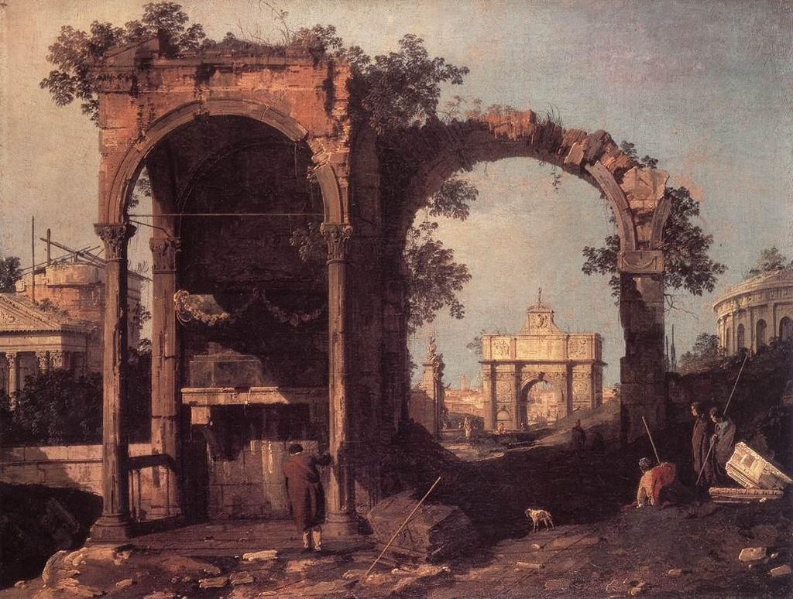

<head>
<meta charset="UTF-8" />
<meta name="keywords" content="drawing, painting" />
<meta name="description" content="drawings by Sunjy" />
<title>Sunjy</title>
<link rel="shortcut icon" type="image/x-icon" href="../../mImages/mCommon/favicon.ico" media="screen" />
<link rel="stylesheet" type="text/css" href="../../mCsses/mCommon/mCssA.css" />
<link rel="stylesheet" type="text/css" href="../../mCsses/mCommon/mCssB.css" />
<link rel="stylesheet" type="text/css" href="../../mCsses/mCommon/mCssC.css" />
<link rel="stylesheet" type="text/css" href="../../mCsses/mCommon/mCssD.css" />
<link rel="stylesheet" type="text/css" href="../../mCsses/mContent/mCssA.css" />
<link rel="stylesheet" type="text/css" href="../../mCsses/mContent/mCssB.css" />
<link rel="stylesheet" type="text/css" href="../../mCsses/mContent/mCssC.css" />
<link rel="stylesheet" type="text/css" href="../../mCsses/mContent/mCssD.css" />
</head>
<script type="text/javascript" src="../../mScripts/mContent/mContentAA.js" /></script>
<script type="text/javascript" src="../../mScripts/mContent/mContentAB.js" /></script>
<script type="text/javascript" src="../../mScripts/mContent/mContentAC.js" /></script>
<script type="text/javascript" src="../../mScripts/mContent/mContentAD.js" /></script>
<script type="text/javascript"></script> 
<script type="text/javascript">
document.write('<div class="mImgAbsolute"></div>');
/*
document.write('<p class="mFontSizeBColor" />From a white paper...</p>');
document.write('<table class="center"><tr><td>');
document.write('');
document.write('</td></tr></table>');
*/
</script>


<script type="text/javascript">
document.write('<p class="mFontSizeBColor" />Capriccio: Ruins and Classic Buildings</p>');
document.write('<p class="mFontSizeSColor" />“Capriccio: Ruins and Classic Buildings” by Canaletto depicts an architectural fantasy, placing together buildings, archaeological ruins, and other structural elements in fictional combinations.<br><br>In this painting, Canaletto drew on his studies of identifiable sites and buildings but combined them in an imaginative form to create a poetic image.<br><br>In this inventive capriccio, Canaletto brought together different architectural elements of ruins and classical buildings from Rome and Padua.<br><br>Many different versions of such compositions were produced, by various artists, indicating that there was an eager market for works of this type.<br><br>They were inspired by the classical landscapes of the seventeenth century. Their appeal increased with the growing interest in antiquarianism, archaeology, and the history of things of the past.<br><br>Capriccio in Art<br><br>Capriccio paintings can be anything from re-imagining a building into the future as ruins or placing structures in entirely different settings from reality.<br><br>The subjects of capriccio paintings cannot be taken as an accurate depiction due to the fantastical nature of the genre. Capriccio falls under the broad genre of landscape painting.<br><br>This style of painting was introduced in the Renaissance and continued into the Baroque. This artistic freedom in capriccio paintings allows for the transformation of buildings and compositions.<br><br>Some artists took elements that didn’t belong in the original inspiration, such as people, animals, or plants, and incorporated them into the work.<br><br>It is important to remember that in the realm of Capriccio, a painting of a building is not one of record or history, but that it is a creative artwork.<br></p>');
document.write('<table class="center" /><tr><td>');
document.write('<br>In this painting, Canaletto drew on his studies of identifiable sites and buildings but combined them in an imaginative form to create a poetic image.<br><br>In this inventive capriccio, Canaletto brought together different architectural elements of ruins and classical buildings from Rome and Padua.<br><br>Many different versions of such compositions were produced, by various artists, indicating that there was an eager market for works of this type.<br><br>They were inspired by the classical landscapes of the seventeenth century. Their appeal increased with the growing interest in antiquarianism, archaeology, and the history of things of the past.<br><br>Capriccio in Art<br><br>Capriccio paintings can be anything from re-imagining a building into the future as ruins or placing structures in entirely different settings from reality.<br><br>The subjects of capriccio paintings cannot be taken as an accurate depiction due to the fantastical nature of the genre. Capriccio falls under the broad genre of landscape painting.<br><br>This style of painting was introduced in the Renaissance and continued into the Baroque. This artistic freedom in capriccio paintings allows for the transformation of buildings and compositions.<br><br>Some artists took elements that didn’t belong in the original inspiration, such as people, animals, or plants, and incorporated them into the work.<br><br>It is important to remember that in the realm of Capriccio, a painting of a building is not one of record or history, but that it is a creative artwork.<br>" />');
document.write('</td></tr></table>');
</script>


